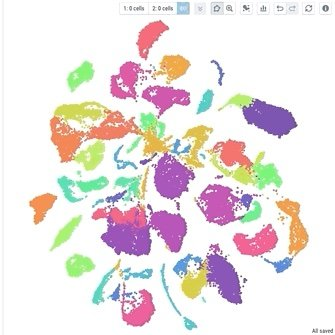
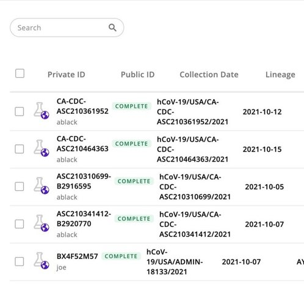
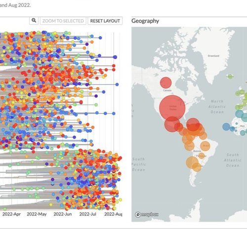
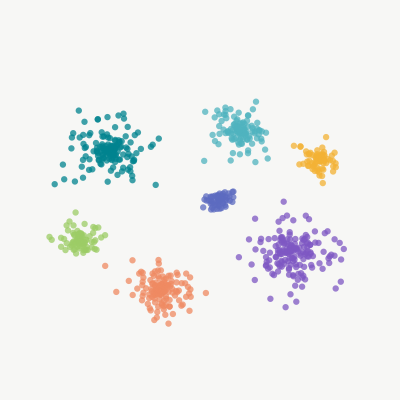
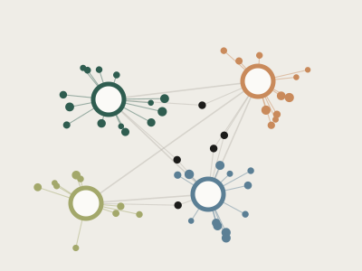

CZI · Scientific lead
cellxgene: an interactive explorer for high-dimensional data
cellxgene lets scientists explore single-cell data and other high-dimensional data interactively. As scientific lead, I designed its data-oriented features, built the data models behind them, and kept the product grounded in what researchers needed. It now serves thousands of scientists every week.

CZI · Founding product lead
CZ GEN EPI: genomic epidemiology for public health
Public health departments were sequencing pathogens but had few ways to analyze the data. I defined the product vision for CZ GEN EPI, a free, no-code genomic epidemiology platform, and led the team that shipped its first version. As it grew, we partnered with Theiagen, and as TheiaGenEpi it now serves 100+ public health departments around the world.

Fred Hutch & CZI · Core contributor
Nextstrain: real-time tracking of pathogen evolution
Nextstrain turns public genomic data into a continually updated view of how pathogens evolve and spread. I was an early full-stack core contributor during my PhD. In 2020, I drafted its weekly COVID-19 situation reports, which flagged early local spread and averaged 500,000 readers a week. Nextstrain won the Open Science Prize and a Webby.

CZI · Scientific lead
Virtual cells: putting single-cell foundation models to work
I worked with researchers to scope early use cases for single-cell foundation models, then turned them into features and tools on CZI's Virtual Cells Platform that any researcher can reuse. For example, researchers can co-embed their own data directly with our reference data, which makes that reference data more valuable.

CZI · Founder & lead
Open Source Council: making open source intentional
I founded CZI's Open Source Council and led its strategy and roadmap, which formalized open source standards for the software CZI builds. We adapted Mozilla's open source archetypes for scientific software; other institutions, including Carnegie Mellon University, have adopted the framework.